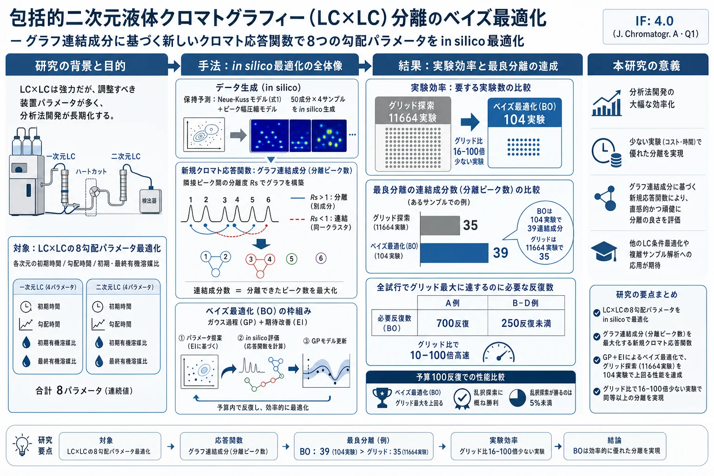

包括的二次元液体クロマトグラフィー（LC×LC）分離のベイズ最適化 — グラフ連結成分に基づく新しいクロマト応答関数で8つの勾配パラメータをin silico最適化

<!-- 方針: 11ページのJ. Chromatogr. Aチュートリアル論文の全訳密度版。原文構成(1序論→2理論(保持モデル/BO)→3材料と方法→4結果と考察(応答関数/グリッド/BO/比較/収束)→5結論)に忠実。数式(Neue-Kuss式1・GP式17-22・EI式25-26・分離度式28)と数値(11664実験・連結成分数など)を保持。元PDFが画像取得で一部数式OCRが崩れていたため、原文が明示する標準式(Neue-Kuss/GP/EI)は正しい標準形で再掲した。対象は合成試料のLC×LCだが、保持モデリング・メソッド開発・BOの実装例として収録。「> 補足:」は訳者注。 -->
書誌情報
- 標題（原題）: Bayesian optimization of comprehensive two-dimensional liquid chromatography separations
- 著者・所属: Jim Boelrijk, Bob Pirok, Bernd Ensing, Patrick Forré（アムステルダム大学 AI4Science Lab／分析化学グループ／計算化学グループ／情報学研究所、オランダ）
- 掲載誌・巻号・DOI: J. Chromatogr. A, 2021, 1659, 462628. https://doi.org/10.1016/j.chroma.2021.462628
- インパクトファクター: 4.0（Journal of Chromatography A, Q1・2024 JCR。分離科学の代表誌）
- 受理経過 / ライセンス: Received 2021-05-25 / Accepted 2021-10-13。CC BY 4.0（Tutorial Article、オープンアクセス）
補足（この論文の位置づけ）: ベイズ最適化（BO）を実際のクロマトグラフィー法開発に応用した好例で、本サイトのBO総説（bayesian-optimization-chemical-reactions-review）と保持モデリング総説（retention-modeling-lc-review）、in silico HPLC法開発（insilico-hplc-qspr-lser-lss-retention）を橋渡しする。対象は合成試料の二次元LC（LC×LC）だが、「多数の装置パラメータを、少ない実験で賢く最適化する」枠組みは生薬の多成分HPLC/UPLC法開発にそのまま応用できる。特に「分離の良さをどう1つの数値（目的関数）で測るか」という問題に、グラフ理論（連結成分＝互いに分離できたピーク群）で答えを与えた点が実務的に示唆に富む。
要旨（Abstract）
包括的二次元液体クロマトグラフィー（LC×LC）は分析化学における強力で新興の分離手法である。しかし調整すべき装置パラメータが多く、分析法開発が長期化するという難点を抱える。これを加速するため、本研究はベイズ最適化（BO）アルゴリズムを適用した。本アルゴリズムは、グラフの連結成分（connected components）の概念に基づく新規クロマト応答関数を最大化することで LC×LC の法パラメータを最適化する。50成分の4種類のサンプルに対し8つの勾配パラメータを最適化する問題で、グリッド探索（11,664実験）と乱択探索に対しベンチマークした。最悪ケース性能は、ランダムな開始実験とシードで最適化ループを100実験繰り返して調べた。100実験の最適化予算では、BO は概して乱択探索を上回り、しばしばグリッド探索も改善した。さらに BO は、グリッド探索と同等の最適解をはるかに少ない実験（16〜100分の1）で見つけ、グリッド探索に比べ格段にサンプル効率的な代替となった。初期化実験の選択を（分析者の経験や賢い手続きで）より工夫すればさらに改善しうる。本手法は温度・流速など他パラメータへの拡張が可能で、閉ループの自動法開発への道を開く。
1. 序論（Introduction）
LC×LC の法開発・最適化は多数の設計判断を要し、日常分析ラボへの導入コストを高くしている。まず、直交する2つの分離機構と、試料非依存の物理パラメータ（カラム寸法・粒径・流速・モジュレーション時間）を決める必要がある。次に化学パラメータ（移動相の種類・組成・時間変化のプログラム、温度・pH・緩衝液強度）で各次元の選択性を最適化する。全ての物理・化学パラメータを精緻に調整する必要があるため、優れた LC×LC 応用も達成されてはいるが、法開発は概して煩雑・長期・高コストで、一部の専門家に限られ、工業応用はまだ稀である。
これを緩和する研究がある。一つは保持モデリング——勾配スキャン技術で、勾配傾斜を変えた少数のクロマトグラムを記録し、成分の保持時間をクロマト間で対応づけて保持モデルに当てはめる（Neue-Kuss 等）。得たモデルで多くの化学パラメータの保持を予測でき、法の質を評価するクロマト応答関数と併せて法最適化ができる。最適化にはグリッド探索（パラメータ格子の網羅探索、DryLab や MOREPEAKS などに実装）、あるいは進化的アルゴリズム（多パラメータに強い）などが使われる。Hao らは遺伝的手法で 1D-LC の多線形勾配を最適化（保持時間予測誤差 <0.82%）、Huygens らは遺伝的アルゴリズムで 1D/2D-LC を最適化し、100成分の LC×LC 分離を625実験のグリッドより100実験未満で改善した（ただし条件を大きく簡略化し総理論段数2000万を仮定）。
ただし保持モデリングは少数の化学パラメータの効果しか捉えられず、シミュレーションは当てはめデータの質次第で実測と一致しないことがある。勾配スキャンで同定されない成分はモデルに入らず、提案最適法が実は準最適なこともある。もう一つのアプローチが直接的な実験最適化（試行錯誤）で、解析的記述が無いパラメータにも適用できるが、実験数がずっと少なく制限される（例: 100）。よって直接実験最適化では、最適法に到達するのに要するサンプル効率（実験数）が最重要となる。
本研究は逐次的大域最適化戦略であるベイズ最適化を探る。導関数や解析形など目的関数への仮定がほとんど不要で柔軟であり、進化的アルゴリズムより概してサンプル効率が良い——多パラメータの保持モデリングにも、単純〜中程度の分離問題の直接実験最適化にも魅力的なツールである。理論（保持モデリングと BO）を第2章で、新規クロマト応答関数を第4.1節で導入し、線形勾配プログラムの8つの勾配パラメータの最適化に適用する。全実験はin silico（4サンプルをランダム成分で保持モデリング生成）で行い、グリッド探索・乱択探索の2ベースラインと比較する。単純化（ガウスピーク・等濃度）した一方、応答関数はアンダーサンプリングを考慮した現実的なピークキャパシティを用いる。
2. 理論（Theory）
2.1 クロマト分離の予測
保持予測には Neue-Kuss モデル、ピーク形状には Neue らのピーク幅モデルを用いる。
2.1.1 勾配溶出の保持モデリング（Neue-Kuss）:
式(1) k(φ) = k₀ · (1 + S₂φ)² · exp[ −S₁φ / (1 + S₂φ) ]。ここで φ は勾配組成、k₀ は φ=0 に外挿した保持因子、S₁・S₂ は式の傾きと曲率を表す係数。
勾配開始前に溶出する成分の保持時間は 式(2) t_{R,before} = t₀(1 + k_init)（t₀=カラム死時間、k_init=勾配開始時の保持因子）。時刻 τ = t₀ + t_init + t_D（t_init=初期アイソクラティック時間、t_D=システムドウェル時間）に組成 φ_init から始まり、勾配時間 t_G で φ_final へ変化。勾配中の組成は 式(3) φ(t_R)=φ_init + B(t_R − τ)、勾配の傾き 式(4) B = (φ_final − φ_init)/t_G。線形勾配の一般式（式5）から勾配中に溶出する成分の保持時間が計算でき、式(1) を代入・積分して勾配中の保持時間 式(7)（因子 F は式8）、勾配後に溶出する成分は 式(9)（因子 H は式10）で与えられる。
2.1.2 ピーク幅モデル: 保持モデルはピーク頂点の位置を与えるがピーク幅は与えない。Snyder らのピーク圧縮モデルで、アイソクラティックのピーク幅は 式(11) W_iso = 4N^{−1/2}·t₀(1 + k(φ))（N=理論段数）。勾配では勾配圧縮を補正する因子 G（式12、p=式13、b=式14）を導入し、勾配溶出のピーク幅は 式(15) W_grad = 4G·N^{−1/2}·t₀(1 + k_e)（k_e=溶出時の保持因子）。全ピークはガウス・等濃度と仮定。
2.2 ベイズ最適化
未知の目的関数 f(x) の最大化問題（式16）。液体クロマトへの BO ループ:
- 入力空間 X（最適化する法パラメータと上下限）を定義。
- 初期パラメータ値（ランダムまたは均等）を選び実験。
- 全既往実験で目的関数の確率モデルを当てはめ。
- 獲得関数を最大化して次に最も有望な点を見つける。
- その点で実験。
- 停止条件を計算、満たせば停止、否ならステップ3へ。
確率モデルは予測平均（任意点の f を近似）と予測分散（不確実性）を与える。本研究は柔軟なカーネル設計と扱いやすい不確実性定量ゆえガウス過程（GP）を用いる。獲得関数は活用（予測平均が高い領域）と探索（分散が高い領域）を釣り合わせ、本研究は期待改善（EI）を用いる。
2.2.1 ガウス過程: GP は任意有限個が同時ガウス分布に従う確率変数の集まりで、平均関数 μ(x) と共分散関数（カーネル）κ(x,x′) で完全に特徴づけられる。ノイズ付き観測 y = f + ε（ε は平均0・分散σ²の i.i.d. ガウスノイズ）に対し、f は式(17) の多変量正規、y は 式(18) y ～ 𝒩(μ(X), K(X,X) + σ²I)。観測出力は平均0・単位分散に標準化し、入力は0〜1に正規化するため、平均関数は μ(X)=0（一般的選択）とし、GP はカーネルで記述される。テスト入力 X\* での予測は同時分布（式19）とガウスの条件付けから閉形式の事後予測分布（式20）で、
式(21) μ\ = μ(X\) + K(X\,X)ᵀ [K(X,X)+σ²I]⁻¹ (y − μ(X)) 式(22) Σ\ = K(X\,X\) − K(X\,X) [K(X,X)+σ²I]⁻¹ K(X,X\)
ARD 二乗指数カーネルを共分散関数に用いる（式23: κ_SE(x,x′) = θ₀·exp[ −½ Σ_d (x_d − x′_d)²/θ_d² ]。θ₀=スケール、θ_d=各次元の長さスケール）。パラメータ θ とノイズ σ は対数周辺尤度（式24: データ適合項＋複雑さペナルティ〔長い長さスケール＝滑らかを好み過学習を抑制〕＋定数）の最大化で推定。
2.2.2 期待改善（EI）獲得関数: 既往最良 f\ を改善しそうな点を選ぶ。改善関数 式(25) I(x) := (f(x) − f\)·𝟙(f(x) > f\)。f*(x) は GP ゆえガウス確率変数で、期待値は解析的に:
式(26) α_EI(x) = (μ(x) − f\)·Φ((μ(x) − f\)/σ(x)) + σ(x)·φ((μ(x) − f\*)/σ(x)) （σ>0 のとき、σ=0 なら 0）
（Φ・φ は標準正規の累積・確率密度）。α_EI を最大化すると改善量が考慮され、探索と活用が自然に釣り合う。
2.3 グリッド探索（ベンチマーク）
手動選択した間隔のパラメータ部分集合の全組合せを網羅計算。並列だが次元の呪いに苦しみ、格子を細かく/パラメータを増やすと組合せ爆発し、大域/局所最適を見落としうる。
2.4 乱択探索（ベンチマーク）
連続範囲から指定回数ランダムに選ぶ。BO も連続範囲から選ぶため離散のグリッドを補完する。少数のパラメータのみが性能に効く場合はグリッドを上回りうるため、最適化機構への洞察も与える。
3. 材料と方法（Materials and methods）
3.1 計算手順: 保持予測は Python 自作シミュレータ（SciPy/NumPy）で、2.1.1 の式を用いる。固定装置パラメータは Table 1（Schoenmakers らに着想、2D-LC 機の現実的設定）。ピーク幅は Neue のピーク圧縮モデル。BO は BoTorch＋GPyTorch、ベースラインは NumPy 実装。
Table 1. 保持モデリングに採用した装置パラメータ
| 名称 | 値 | 単位 |
|---|---|---|
| 1次元 ドウェル時間 | 19.6 | min |
| 1次元 死時間 | 40 | min |
| 1次元 理論段数 N | 100 | – |
| 2次元 ドウェル時間 | 1.8 | s |
| 2次元 死時間 | 15.6 | s |
| 2次元 理論段数 N | 100 | – |
3.2 化合物ジェネレータ: 「スカウティング/スキャニング」実験で保持パラメータの上下限を定めた知見を用い、保持パラメータ（k₀・S₁・S₂）を各分布からサンプルして in silico 生成。文献の2手続きを2D分離向けに微調整し、計4戦略（A-D）で各50成分のサンプルA-Dを生成（Table 2）:
- 戦略A（Desmet ら）: ln k₀ ～ U(3.27, 11.79)、ln k_M ～ U(−2.38, −1.03)、S₂ ～ U(−0.24, 2.51)、S₁ は式(27) で計算。両次元を独立にサンプル＝完全直交を仮定（現実にはまず達成されない）。
- 戦略B: 1次元はAと同様、2次元は 2S₂ = 1S₂ + U(−c₁,c₁)、2lnk₀ = 1lnk₀ + U(−c₂,c₂)、2lnk_M = 1lnk_M + U(−c₃,c₃)（相関定数 c₁=2, c₂=1, c₃=1）で次元間に相関を導入。
- 戦略C（Kensert ら、57実測成分に基づく）: S₁ ～ U(10^0.8, 10^1.6)、S₂ = 2.501·logS₁ − 2.0822 + r₁（r₁ ～ U(−0.35,0.35)）、k₀ = 10^(0.0839·S₁+0.5054)+r₂（r₂ ～ U(−1.2,1.2)）。両次元独立＝完全直交。
- 戦略D: 1次元はC、2S₁ = 1S₁ + U(−c₄,c₄)（c₄=20）で次元間を結合、残りはCと同関係で2S₁から計算。
4. 結果と考察（Results and discussion）
4.1 目的関数（新規クロマト応答関数）
クロマト応答関数は分離の質（分離度・谷/ピーク比・直交性）と分離時間の指標で性能を評価する。本研究はグラフ理論の連結成分（各対のノードが経路で連結された無向グラフの成分）に基づく新規応答関数を提案。手順:
- 両次元に時間制限を設け、それ以降に溶出する成分は除外。
- 時間内に溶出する各ピークをノードとし、ピーク間の分離度に応じて辺で結ぶ。分離度は 式(28) RS_{i,j} = √[ δ_x²/(σ_{i,x}+σ_{j,x})² + δ_y²/(σ_{i,y}+σ_{j,y})² ]（δ_x/δ_y=各次元の保持時間差、σ=ガウスピークの標準偏差）。
- 分離度 >1 なら分離可能とみなし辺を引かない（disconnected）、<1 なら重なりありとみなし辺を引く（connected）。全ペアで繰り返し、連結成分の数を数える（孤立した分離ピークも1連結成分）。
この応答関数を最大化すると、時間制約内でできるだけ多くのピークを分離する法パラメータが見つかる。実験でのピーク検出による分離ピーク計数に相当し、近接ピークで幅（＝分離度）が正確に測れない・1ピーク下の成分数が分からないといった実務的困難を捉える。例（Fig. 1、50成分）: 時間内に48成分が見え、うち21ピークは全隣接から分離度>1で分離（21連結成分）、他27ピークは10連結成分にクラスタ化——スコアは 21+10 = 31連結成分。
4.2 グリッド探索
8勾配パラメータを Table 3 の格子で探索。粗い格子でも11,664実験に達し、パラメータ増で非現実的になることを裏づける。影響の小さいパラメータ（初期時間 t_init）は粗く、大きいパラメータ（勾配時間 t_G）は細かくして情報量を高めた。理論段数は両次元100（アンダーサンプリング・注入量を考慮した現実的値）。
Table 3. 最適化対象パラメータとグリッド探索の範囲・刻み
| パラメータ | 最小 | 最大 | ステップ数 | 刻み |
|---|---|---|---|---|
| 1次元 初期時間 1t_init | 0 | 10 | 3 | 5 |
| 1次元 勾配時間 1t_G | 30 | 200 | 6 | 34 |
| 1次元 初期組成 1φ_init | 0.1 | 0.5 | 3 | 0.2 |
| 1次元 最終組成 1φ_final | 0.6 | 1 | 3 | 0.2 |
| 2次元 初期時間 2t_init | 0 | 0.2 | 2 | 0.2 |
| 2次元 勾配時間 2t_G | 10 | 20 | 4 | 5 |
| 2次元 初期組成 2φ_init | 0.1 | 0.5 | 3 | 0.2 |
| 2次元 最終組成 2φ_final | 0.6 | 1 | 3 | 0.2 |
結果（Fig. 2）: 全サンプル（A-D）でグリッド探索は50成分すべての分離解を見つけられず、最大連結成分数は A=32・B=23・C=38・D=35。多くのパラメータ組合せは連結成分が少なく（分離が悪く）、良い分離につながるのは格子のごく一部——良い分離を与えるのはパラメータ空間の非常に狭い領域だけで、最適化ランドスケープは狭い山と広いプラトーを持つ可能性が示唆された（Huygens らは1D-LCでランドスケープが非凸で局所最適が多いことを可視化）。
4.3 ベイズ最適化
8勾配パラメータ（グリッドと同じ）を50成分サンプルで最適化。4つのランダム実験で初期化＋100反復＝計104実験。結果（Fig. 3）: わずか42反復でグリッド最大（35）を上回る37連結成分の法を発見。さらに探索を続け、74反復で最良スコア39連結成分に到達（2次元勾配パラメータはグリッド最大とほぼ同値、1次元勾配時間も近いが、1次元初期時間・初期/最終組成は大きく異なり、より良い分離を与えた）。
グリッド最良（11,664実験中）と BO 最良（104実験中）のクロマトグラム比較（Fig. 4）: グリッド最良は時間制約内（200, 2.26）に48/50成分を溶出、うち21ピークが8クラスタに集中し35連結成分。BO 最良は全50成分を溶出、19ピークが8クラスタで39連結成分。伸ばした初期時間＋高い初期/最終組成が1次元を圧縮し、未分離成分を増やさず2ピーク多く時間内に溶出させた。一部のクラスタ（グリッドの160分・BOの150分付近）は変わらず——単純な勾配では保持パラメータが似すぎて分離できない可能性（カラム効率・実験時間・勾配複雑さの増加で解決しうる）。
4.4 ベンチマークとの比較（最悪ケース性能）
初期反復では BO はほぼランダムに動く（パラメータ間関係の知識がまだ無い）ため、乱数シードと初期化実験の選択に依存する。直接実験最適化のように実験が高コストな状況では複数シードや多数の初期実験を試す余裕が無いため、最悪ケースが重要。各サンプルで異なるシードの100試行（4初期＋100反復＝104実験）を行い、乱択探索も同条件で比較（Fig. 5）:
- BO は概して乱択探索を上回り、乱択が104反復で BO より良い最大を見つけたのは5%未満の散発的ケースのみ。
- 乱択がグリッド最大に達したのは稀（C ~10%、A 0%、B 3%、D 2%）。104反復の乱択が11,664実験のグリッドに劣るのは驚きでないが、「少数パラメータのみ効く場合は乱択がグリッドを上回りうる」ことから、本研究の勾配パラメータの有用性がある程度裏づけられる（BO が乱択と同性能なら、BO が正しく動いていないか、問題が易しすぎるかを疑うべき——ベースライン比較が肝要）。
- BO は全サンプル（A-D）でグリッド最大を上回る法を発見（104実験 vs 11,664実験を考えれば顕著）。ただし100試行・104反復で常にグリッドを上回るわけではなく、グリッドと同等以上だったのは A=29%・B=85%・C=99%・D=84%。サンプルAが有意に難しい理由は不明（鋭く狭い最適を BO が通り過ぎ検出に多反復を要する可能性。実際スコア29には速く到達〔<150反復で約85%〕するが、それ以上の改善に時間がかかる）。
4.5 グリッド最大に到達するのに要する反復数
各サンプルでグリッド最大が観測されるまで BO を100回実行（Fig. 6、累積分布 CDF）: B ~85%・C ~95%・D ~82% が100反復以下で収束、残りは 100〜204(B)/230(C)/231(D) 反復。サンプルAはやはり本質的に難しいが、700反復で全100試行がグリッド最大に到達（それでも11,664実験よりはるかに少ない。80%は<300反復）。直接実験最適化には多い実験数とも言えるが、本研究はランダム初期化——より洗練された初期化や専門知識による狭いパラメータ範囲でさらに改善しうる。
5. 結論（Conclusion）
BO を適用し、新規クロマト応答関数を最大化して LC×LC の8勾配パラメータを最適化できることを示した。50成分×4サンプルで異なるシードの100試行により最悪ケース性能を評価し、グリッド探索（11,664実験）・乱択探索とベンチマーク。100反復の予算で BO は概して乱択を上回り、しばしばグリッドを改善。全試行でグリッド最大に達するのに A例で700反復・B-D例で250反復未満（グリッド比10〜100倍の高速化）で、多くはさらに速い（B-D は80%以上が<100反復で収束）。初期化実験の選択を工夫すればさらに改善しうる。BO は多パラメータの保持モデリング最適化、ひいては単純〜中程度の分離問題の直接実験最適化に有効な手法である。本研究は単純化したクロマト（ガウスピーク・等濃度・生成成分）で行ったため、続報では非理想性の影響を本結果を基準に評価する必要がある。直接実験最適化への適用には、ピーク検出・ピークトラッキング等のデータ処理アルゴリズムが分離の質の正確・一貫した評価に不可欠。とはいえ BO が自動の直接実験最適化で重要な役割を果たしうることは明らかである。
参考文献
- A. D'Attoma, C. Grivel, S. Heinisch, On-line comprehensive two-dimensional separations of charged compounds using reversed-phase high performance liquid chromatography and hydrophilic interaction chromatography. Part I: orthogonality and practical peak capacity considerations, J. Chromatogr. A 1262 (2012) 148–159, https://doi.org/10.1016/j.chroma.2012.09.028.
- R.J. Vonk, A.F. Gargano, E. Davydova, H.L. Dekker, S. Eeltink, L.J. De Koning, P.J. Schoenmakers, Comprehensive two-dimensional liquid chromatography with stationary-phase-assisted modulation coupled to high-resolution mass spectrometry applied to proteome analysis of Saccharomyces cerevisiae, Anal. Chem. 87 (10) (2015) 5387–5394, https://doi.org/10.1021/acs.analchem.5b00708.
- P. Dugo, N. Fawzy, F. Cichello, F. Cacciola, P. Donato, L. Mondello, Stop-flow comprehensive two-dimensional liquid chromatography combined with mass spectrometric detection for phospholipid analysis, J. Chromatogr. A 1278 (2013) 46–53, https://doi.org/10.1016/j.chroma.2012.12.042.
- M.J. den Uijl, P.J. Schoenmakers, G.K. Schulte, D.R. Stoll, M.R. van Bommel, B.W. Pirok, Measuring and using scanning-gradient data for use in method optimization for liquid chromatography, J. Chromatogr. A 1636 (2021) 461780, https://doi.org/10.1016/j.chroma.2020.461780.
- B.W. Pirok, S.R. Molenaar, L.S. Roca, P.J. Schoenmakers, Peak-tracking algorithm for use in automated interpretive method-development tools in liquid chromatography, Anal. Chem. 90 (23) (2018) 14011–14019, https://doi.org/10.1021/acs.analchem.8b03929.
- J.W. Dolan, D.C. Lommen, L.R. Snyder, DryLab® computer simulation for high-performance liquid chromatographic method development. II. Gradient elution, 1989, https://doi.org/10.1016/S0021-9673(01)89134-2.
- B.W. Pirok, S. Pous-Torres, C. Ortiz-Bolsico, G. Vivó-Truyols, P.J. Schoenmakers, Program for the interpretive optimization of two-dimensional resolution, J. Chromatogr. A 1450 (2016) 29–37, https://doi.org/10.1016/j.chroma.2016.04.061.
- W. Hao, B. Li, Y. Deng, Q. Chen, L. Liu, Q. Shen, Computer aided optimization of multilinear gradient elution in liquid chromatography, J. Chromatogr. A 1635 (2021) 461754, https://doi.org/10.1016/j.chroma.2020.461754.
- B. Huygens, K. Efthymiadis, A. Nowé, G. Desmet, Application of evolutionary algorithms to optimise one- and two-dimensional gradient chromatographic separations, J. Chromatogr. A 1628 (2020) 461435, https://doi.org/10.1016/j.chroma.2020.461435.
- J. Bergstra, R. Bardenet, Y. Bengio, B. Kégl, Algorithms for hyper-parameter optimization, Adv. Neural Inf. Process. Syst. 24 (2011).
- D. Lizotte, T. Wang, M. Bowling, D. Schuurmans, Automatic gait optimization with Gaussian process regression, IJCAI International Joint Conference on Artificial Intelligence (2007) 944–949.
- R. Marchant, F. Ramos, Bayesian optimisation for intelligent environmental monitoring, IEEE International Conference on Intelligent Robots and Systems (2012) 2242–2249, https://doi.org/10.1109/IROS.2012.6385653.
- J. Azimi, A. Jalali, X. Fern, Hybrid batch Bayesian optimization, Proceedings of the 29th International Conference on Machine Learning, ICML 2012, 2 (2012) 1215–1222.
- S. Daulton, M. Balandat, E. Bakshy, Differentiable expected hypervolume improvement for parallel multi-objective Bayesian optimization, arXiv (2020).
- A. Kensert, G. Collaerts, K. Efthymiadis, G. Desmet, D. Cabooter, Deep Q-learning for the selection of optimal isocratic scouting runs in liquid chromatography, J. Chromatogr. A 1638 (2021) 461900, https://doi.org/10.1016/j.chroma.2021.461900.
- P. Nikitas, A. Pappa-Louisi, Retention models for isocratic and gradient elution in reversed-phase liquid chromatography, J. Chromatogr. A 1216 (10) (2009) 1737–1755, https://doi.org/10.1016/j.chroma.2008.09.051.
- U.D. Neue, H.J. Kuss, Improved reversed-phase gradient retention modeling, J. Chromatogr. A 1217 (24) (2010) 3794–3803, https://doi.org/10.1016/j.chroma.2010.04.023.
- U.D. Neue, D.H. Marchand, L.R. Snyder, Peak compression in reversed-phase gradient elution, J. Chromatogr. A 1111 (1) (2006) 32–39, https://doi.org/10.1016/j.chroma.2006.01.104.
- H. Poppe, J. Paanakker, M. Bronckhorst, Peak width in solvent-programmed chromatography: I. General description of peak broadening in solvent-programmed elution, J. Chromatogr. A 204 (C) (1981) 77–84, https://doi.org/10.1016/S0021-9673(00)81641-6.
- J. Snoek, H. Larochelle, R.P. Adams, Practical Bayesian optimization of machine learning algorithms, Adv. Neural Inf. Process. Syst. 4 (2012) 2951–2959.
- C. Oh, E. Gavves, M. Welling, BOCK: Bayesian optimization with cylindrical kernels, Proceedings of Machine Learning Research (2018) 3868–3877.
- C.E. Rasmussen, Gaussian Processes in Machine Learning, Springer Verlag, 2004, pp. 63–71, https://doi.org/10.1007/978-3-540-28650-9_4.
- B. Shahriari, K. Swersky, Z. Wang, R.P. Adams, N. De Freitas, Taking the human out of the loop: a review of Bayesian optimization, Proc. IEEE 104 (1) (2016) 148–175, https://doi.org/10.1109/JPROC.2015.2494218.
- A.D. Bull, Convergence rates of efficient global optimization algorithms, Journal of Machine Learning Research 12 (2011) 2879–2904.
- J. Bergstra, Y. Bengio, Random search for hyper-parameter optimization, Journal of Machine Learning Research 13 (2012) 281–305.
- M. Balandat, B. Karrer, D.R. Jiang, S. Daulton, B. Letham, A.G. Wilson, E. Bakshy, BoTorch: a framework for efficient Monte-Carlo Bayesian optimization, Adv. Neural Inf. Process. Syst. 33 (2020).
- J.R. Gardner, G. Pleiss, D. Bindel, K.Q. Weinberger, A.G. Wilson, GPyTorch: black-box matrix-matrix Gaussian process inference with GPU acceleration, in: Advances in Neural Information Processing Systems, volume 2018-Decem, 2018, pp. 7576–7586.
- B.W. Pirok, S.R. Molenaar, R.E. van Outersterp, P.J. Schoenmakers, Applicability of retention modelling in hydrophilic-interaction liquid chromatography for algorithmic optimization programs with gradient-scanning techniques, J. Chromatogr. A 1530 (2017) 104–111, https://doi.org/10.1016/j.chroma.2017.11.017.
- J.T. Matos, R.M. Duarte, A.C. Duarte, Trends in data processing of comprehensive two-dimensional chromatography: state of the art, Journal of Chromatography B: Analytical Technologies in the Biomedical and Life Sciences 910 (2012) 31–45, https://doi.org/10.1016/j.jchromb.2012.06.039.
- J.T. Matos, R.M. Duarte, A.C. Duarte, Chromatographic response functions in 1D and 2D chromatography as tools for assessing chemical complexity, Trends in Analytical Chemistry 45 (2013) 14–23, https://doi.org/10.1016/j.trac.2012.12.013.
- M.R. Schure, Quantification of resolution for two-dimensional separations, J. Microcolumn Sep. 9 (3) (1997) 169–176, https://doi.org/10.1002/(sici)1520-667x(1997)9:3<169::aid-mcs5>3.0.co;2-23.
- G. Vivó-Truyols, S. Van Der Wal, P.J. Schoenmakers, Comprehensive study on the optimization of online two-dimensional liquid chromatographic systems considering losses in theoretical peak capacity in first- and second-dimensions: a pareto-optimality approach, Anal. Chem. 82 (20) (2010) 8525–8536, https://doi.org/10.1021/ac101420f.
補足: 原文の参考文献は全 32 件（[1]〜[32]、本文中の脚注番号もこの範囲に対応）で、Drive の自然言語抽出テキストは単一列でほぼ乱れなく読み取れた（[10][11][13][14][20][21][24][25][27] は原文に DOI リンクが無く Elsevier 内部の refhub アンカーのみだったため、上記でも DOI を付していない）。[31] の DOI 末尾（"2-23"）は原文中のハイパーリンク先を複数箇所で確認した値をそのまま転記しており、慣例的な SICI チェック桁（通常は "2-3" の1桁）と異なる可能性がある。
訳者補足（実務者向けの読みどころ）
以下は原文に無い、生薬・漢方QC実務の観点からの補足である（本文の訳と混ぜない）。
- 「分離の良さ」を1つの数値にする発明: 多成分クロマトの最適化で最も難しいのは「良い分離とは何か」を目的関数化すること。本研究の「分離度<1のピークは同じ塊、>1なら別物とみなし、区別できたピーク（連結成分）の数を数える」という応答関数は、実際のピーク検出で「いくつのピークが見分けられるか」に対応し、直感的で頑健。生薬指紋の多ピーク分離の最適化にも応用しやすい発想。
- BO は「グリッド/DoE の次」の最適化: 8パラメータの網羅グリッドは11,664実験に膨れ上がるが、BO は104実験で同等以上に到達（16〜100倍効率的）。生薬HPLC/UPLCの勾配・温度・pH・流速などを多変数同時に最適化する際、DoE で当たりを付けてから BO で精緻化、という流れが有効。
- ベースライン比較の重要性: 「BO が乱択と同性能なら、問題が易しすぎるか BO が壊れている」という指摘は、最適化を導入する誰もが心得るべき検証観点。自社で最適化ツールを評価する際、必ず乱択・グリッドと比べること。
- 限界（正直に）: 本研究は in silico（ガウスピーク・等濃度・シミュレーション成分）で、実試料の非理想性（テーリング・共溶出・濃度差）は未評価。実機適用にはピーク検出・トラッキングの精度が鍵。
- 用語: LC×LC＝包括的二次元液体クロマトグラフィー、勾配パラメータ＝初期時間/勾配時間/初期・最終有機溶媒比など溶出プログラムの変数、Neue-Kussモデル＝保持因子の勾配組成依存を表す経験式、連結成分＝グラフで互いに繋がったノード群（ここでは分離しきれず塊になったピーク群、または孤立した分離ピーク）、分離度Rs＝隣接ピークの分離の指標、ガウス過程(GP)＝BOのサロゲート、期待改善(EI)＝獲得関数、ARD＝各入力次元の重要度を自動で学習するカーネル形式。